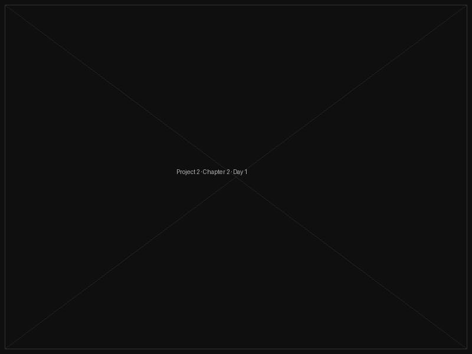

Untitled Study I
A first exploration into negative space and the tension between absence and presence.
Started with nothing but charcoal and an instinct. I didn't know what this would become — I rarely do at the beginning. The blank canvas intimidates me every single time. Today I just made marks. No plan. Just trying to feel where the energy wants to go.
Came back to this after three days away. Distance helps. I could see immediately what wasn't working — the left side felt too heavy, like it was pulling everything off balance. Spent two hours just looking. Then one hour making small corrections. The ratio of looking to making is always higher than I expect.
This was a big day. Three hours straight, almost no breaks. Something unlocked. I stopped trying to control the outcome and just followed the line wherever it wanted to go. The piece told me what it needed. I'm learning to listen.
Done. Or at least — done enough. There's always a moment when you have to decide to stop. I've learned that a piece is finished when more would be too much. This one asked me to leave it alone. I did.
Threshold
On doorways, decisions, and the pause before crossing over.
New year. New piece. I wanted to work with the concept of thresholds — not doors exactly, but the feeling right before you make a choice you can't undo. Started with paint this time, moving away from pure charcoal. The texture is different. More forgiving in some ways, less in others.

Long break between sessions. Life got in the way — it always does. But maybe the break was necessary. Looking at this with fresh eyes I can see it wants to be darker than I originally imagined. Going to lean into that discomfort.
Unnamed
This one doesn't have a name yet. That feels right for now.
Beginning something new without knowing what it is. This is the scariest and most exciting place to be. No concept. No reference images. Just a feeling I'm trying to find the shape of.
Still unnamed. I tried a few titles but they all felt like I was closing a door too early. For now it lives without a name, which means it stays open. I like that.
After the Rain
What remains when the noise clears. A study in quiet aftermath.
Started this one on a grey morning after two weeks of not touching anything. Sometimes the pause is the piece. I came back to the studio and just sat for an hour before picking up a brush. The silence before making feels different each time — this one felt like permission.
Big session today. Three images because I kept stopping to photograph — something was shifting quickly and I didn't want to lose the in-between states. The middle one is my favourite so far. It has a quality I haven't managed to hold onto before. Trying not to chase it too hard.
Two weeks between sessions again. I think this piece needs distance — it asks to be left alone between visits. Each time I return I can see it more clearly. Today I made only small marks. Decisive but quiet. Like punctuation, not sentences.
Frequency
Exploring what it means to make work in response to sound. Music as a starting point, not a subject.
This one started with headphones on and eyes closed. I wanted to see if I could translate a specific feeling — not the music itself, but the place it takes you to. The first session was mostly failure. But useful failure. I learned what this piece doesn't want to be.
Second session. Listening to the same track on repeat — something about the repetition loosens something in me. The two images side by side show a before and after from today. The shift is subtle but I can feel it. This piece is going to take a long time. That feels right.